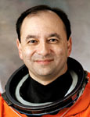

Lyndon B. Johnson Space Center
Houston, Texas 77058
|
National Aeronautics and Space Administration Lyndon B. Johnson Space Center Houston, Texas 77058 |
 |
Biographical Data |
||
Mark L. Polansky
NASA Astronaut (FORMER)
PERSONAL DATA: Born June 2, 1956 in Paterson, New Jersey. Considers Edison, New Jersey, his hometown. Enjoys ice hockey, snow skiing, light aircraft flying, music, and the arts. Married to the former Lisa Ristow of San Antonio, Texas. They have a daughter and a son. His mother, Edith Polansky, resides in Edison, New Jersey.
EDUCATION: Graduated from John P. Stevens High School, Edison, New Jersey, in 1974; received a Bachelor of Science degree in aeronautical and astronautical engineering, and a Master of Science degree in aeronautics and astronautics, from Purdue University, both in 1978.
ORGANIZATIONS: Member of the Society of Experimental Test Pilots, American Institute of Aeronautics and Astronautics, and the Aircraft Owners and Pilots Association.
SPECIAL HONORS: Distinguished Graduate of the USAF Test Pilot School (1987). Distinguished Graduate of USAF Undergraduate Pilot Training (1980). Recipient of the USAF Flying Training Award (1980). Awarded Air Force Meritorious Service Medal and Air Force Commendation Medal with two Oak Leaf Clusters.
EXPERIENCE: Polansky received an Air Force commission upon graduation from Purdue University in 1978. He earned his pilot wings in January 1980 at Vance Air Force Base (AFB), Oklahoma. From 1980 to 1983, he was assigned to Langley AFB, Virginia, where he flew the F-15 aircraft. In 1983, Polansky transitioned to the F-5E aircraft and served as an Aggressor Pilot, where he trained tactical aircrews to defeat enemy aircraft tactics. He was assigned in this capacity to Clark Air Base, Republic of the Philippines, and Nellis AFB, Nevada, until he was selected to attend USAF Test Pilot School, Edwards AFB, California, in 1986. Upon graduation, he was assigned to Eglin AFB, Florida, where he conducted weapons and systems testing in the F-15, F-15E, and A-10 aircraft. Polansky left active duty in 1992 to pursue a career at NASA. He has logged more than 5,000 flight hours in more than 30 different aircraft.
NASA EXPERIENCE: Polansky joined NASA in August 1992, as an aerospace engineer and research pilot. He was assigned to the Aircraft Operations Division of the Johnson Space Center, Texas. His primary responsibilities involved teaching the astronaut pilots Space Shuttle landing techniques in the Shuttle Trainer Aircraft and instructing astronaut pilots and mission specialists in the T-38 aircraft. Polansky also conducted flight testing of the NASA T-38 avionics upgrade aircraft.
Selected as an astronaut candidate by NASA in April 1996, Polansky began training in August 1996. Having completed two years of training and evaluation, he was initially assigned as a member of the Astronaut Support Personnel team at the Kennedy Space Center, Florida supporting space shuttle launches and landings. Polansky also served as Chief of the CAPCOM branch (April 2002 to December 2002), Chief Instructor astronaut (April 2003 to January 2004) and Chief of the Return to Flight and Orbiter Repair branches. A veteran of three space flight, Polansky has logged more than 993 hours in space. He was the pilot on STS-98 and the mission commander on STS-116 and STS-127. Polansky also served as Director of Operations at the Gagarin Cosmonaut Training Center in Star City, Russia. He retired from NASA in June 2012.
SPACE FLIGHT EXPERIENCE: STS-98 Atlantis (February 9 to February 20, 2001). The STS-98 crew continued the task of building and enhancing the International Space Station by delivering the U.S. laboratory module Destiny. The shuttle spent seven days docked to the station while Destiny was attached and three spacewalks were conducted to complete its assembly. The crew also relocated a docking port, and delivered supplies and equipment to the resident Expedition-1 crew. Mission duration was 12 days, 21 hours, 20 minutes.
STS-116 Discovery (December 9 to December 22, 2006). The seven-member crew on this 12-day mission continued construction of the International Space Station by adding the P5 spacer truss segment during the first of four spacewalks. The next two spacewalks rewired the station's power system, preparing it to support the addition of European and Japanese science modules by future shuttle crews. The fourth spacewalk was added to allow the crew to coax and retract a stubborn solar panel to fold up accordion-style into its box. Discovery also delivered a new crew member and more than two tons of equipment and supplies to the station. Almost two tons of items no longer needed on the station returned to Earth with STS-116. Mission duration was 12 days, 20 hours and 45 minutes.
STS-127, International Space Station Assembly Mission 2J/A, Endeavour (July 15to July 31, 2009) delivered the Japanese-built Exposed Facility (JEM-EF) and the Experiment Logistics Module Exposed Section (ELM-ES) to the International Space Station. The crew completed the construction of the KIBO Japanese Experiment Module, installed scientific experiments on its Exposed Facility and delivered critical spare parts and replacement batteries to the orbital complex, in addition to transferring 24,638 pounds of hardware and 1,225 pounds of water to the station. While the shuttle was docked, the mission featured a record 13 astronauts working aboard the station representing all five International Space Station partners -- NASA, the Russian Space Agency, the Canadian Space Agency, the European Space Agency and the Japanese Space Agency (JAXA). The 16-day mission included five spacewalks and was accomplished in 248 orbits of the Earth, traveling 6,547,853 million miles in 15 days, 16 hours, 44 minutes and 58 seconds.
JULY 2012
This is the only version available from NASA. Updates must be sought directly from Mark Polansky.